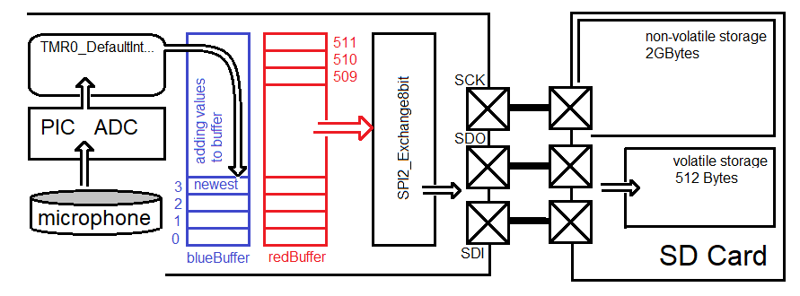

| Lecture: | 25 |
| Objective: | Explain upcoming lab and how to use the MCC interface to EEPROM in order to read and write data. |
| Technical Docs | 24LC256 |
Using an I2C device
This next week's lab will require you to store microphone samples into an electrically eraseable read only memory (EEPROM). The general flow of data from the microphone into the EEPROM is shown in the image below.
As shown in this figure, the EEPROM is connected to the PIC through a pair of signals over an I2C bus. In order to complete this lab you will need to understand the EEPROM and the I2C bus. We will start with the EEPROM.
24LC256 EEPROM
The 24LC256 is a serial EEPROM manufacture by Microchips. It is a a non-volatile memory that can store 256k bits, or 32k bytes. The "256" in "24LC256" is a reference to the number of of k bits. The term "non-volatile" is synonymous with EEPROM and means that the memory does not loose its contents when you remove power from the chip. The term "serial" means that communication with the EEPROM occurs 1 bit at a time. In our case, the serial communication takes place over a I2C bus. The 24LC256 EEPROM is physically organized into groups of 64 bytes, each called a page. Each byte of data in the EEPROM has a distinct address, starting at 0x0000 up to 0x8000. You are able to read and write up to 64 bytes at a time. Page address are multiples of 6410 or 0x40. A write operation moves new data into the EEPROM, overwriting whatever data was there before. A read operation is a non-destructive copy of data out of the EEPROM - the existing data in the EEPROM is not changed.You can read and write data in units as small as a single byte and as large as a page. In order to complete a read or write operation the EEPROM maintains an address register. Every read or write operation automatically increments the address register. If needed, you can overwrite the value in the address register.
Write operations
Writing data to the EEPROM is a two step operation. First the data you are writing is put into a volatile memory. Next, the data in the volatile memory is transferred into the non-volatile storage. In order to understand how your firmware will accomplish this, you will need to be familiar with the following image which shows what information the 24LC256 EEPROM expects when the PIC writes a page of data.
Let's work through Figure 6-2 from beginning (left) to end (right) of a page write operation.
- The PIC first must establish a connection with the EEPROM by transmitting the 7-bit address of the EEPROM. As shown in Figure 6-2, the device address of the EEPROM is 0b1010000 (you will see in the lab that A2, A1, A0 are 0,0,0).
- After the EEPROM sees its device address it asserts an acknowledge (ACK) bit, which tells the PIC that the EEPROM is able to receive a write operation.
- Next the PIC transmit the 15-bit starting address that the PIC wants to start writing to.
- Next the PIC sends up to 64 bytes of data to store in the EEPROM. The EEPROM stores these bytes into its volatile memory.
- The PIC asserts a STOP condition to tell the EEPROM to commit the contents of its volatile memory to its non-volatile memory at the 15-bit address.
- While the EEPROM is writing to its non-volatile memory, the EEPROM will not acknowledge attempts by the PIC to write.
I2C2_MasterWrite(buffer, BUFFER_SIZE, EEPROM_I2C_ADDR, &I2C_Wflag);The I2C2 function uses interrupts to transfer BUFFER_SIZE bytes from buffer to the volatile buffer inside the EEPROM. Once this transfer is complete, you can poll the I2C_Wflag to determine when the EEPROM has completed the write to its non-volatile memory.
The arguments are as follows:
| parameter declaration | Purpose | ||||||||
| uint8_t buffer[] | Hold the data to be sent to the I2C device with the first piece of data sent being at array index 0 and the last piece of data sent being at the last array index. With reference to Figure 6-2 above, the buffer[0] would hold "Address High Byte" and buffer[65] would hold "Data Byte 63". Note that the buffer array would need to hold 66 bytes (64 data bytes plus 2 address bytes), hence the array ends with index 65. | ||||||||
| BUFFER_SIZE | This parameter tells the function how many bytes from the buffer to send across the I2C bus. For a complete page this would be 66 bytes, 2 butes for the Address High/Low Bytes and 64 bytes for the data. | ||||||||
| #define EEPROM_I2C_ADDR | This is the 7-bit address of the I2C device that you are trying to communicate with. Since you are calling the "I2C2_MasterWrite" function the R/W bit is set to 0. This function takes care of sending the "Control Byte" shown in Figure 6-2, hence the control byte should not be included in the buffer. | ||||||||
| I2C2_MESSAGE_STATUS I2C_Wflag; | The "&" symbol in the parameter "&I2C_Wflag" means that the
write function gets a pointer variable to I2C_Wflag. This gives
the write function the ability to updates the I2C_Wflag variable
after the function call has exited. Remember that the bulk
of the work performed by the write function is done in the
interrupt service routine which takes many milliseconds to
complete. This feature provides your code with the status of
the data write.
The data type "I2C2_MESSAGE_STATUS" is an enumerated type, meaning that it can take on a value in the left-most column below. Each of these values tells you about the state of the data transmission. I've only presented the three states of the I2C2_MESSAGE_STATUS that you will encounter in your lab.
|
#define EEPROM_I2C_ADDR 0b1010000 // 7-bit address for 24LC256
#define BLOCK_SIZE 64 // 0x40
void main() {
I2C2_MESSAGE_STATUS I2C_Wflag;
uint8_t pData[BLOCK_SIZE+2];
pData[0] = pageAddress>>8;
pData[1] = (uint8_t) pageAddress;
I2C_Wflag = I2C2_MESSAGE_PENDING;
I2C2_MasterWrite(pData, BLOCK_SIZE+2, EEPROM_I2C_ADDR, &I2C_Wflag);
while(I2C_Wflag == I2C2_MESSAGE_PENDING);
do {
I2C_Wflag = I2C2_MESSAGE_PENDING;
I2C2_MasterWrite(pData, 0, EEPROM_I2C_ADDR, &I2C_Wflag);
while(I2C_Wflag == I2C2_MESSAGE_PENDING);
} while(I2C_Wflag == I2C2_DATA_NO_ACK);
} // end main
There are three time intervals that you will measure in the associated
lab. These are:
- The time required to call the I2C2_MasterWrite function,
- The time required to transfer pData over the I2C bus,
- The time required for the 24LC256 to commit the data to its non-volatile memory.
Read operation
Compared to writing data, reading data is less complex and requires less time. This is because there is no overhead associated with writing to the non-volatile memory. The process of reading is summarized by the I2C bus activity presented in Figure 8-2 and 8-3 of the 24LC256 technical documents and reproduced below.
Let's walk through this sequence to understand it better. A PIC will read one page from an address in the EEPROM as follows:
- The PIC first must establish a connection with the EEPROM by transmitting the 7-bit address of the EEPROM. As shown in Figure 8-2, the device address of the EEPROM is 0b1010000 (you will see in the lab that A2, A1, A0 are 0,0,0).
- After the EEPROM sees its device address it asserts an acknowledge (ACK) bit, which tells the PIC that the EEPROM is able to receive a write operation.
- Next the PIC transmit the 15-bit starting address that the PIC wants to start "writing" to. The PIC will send no data to write. The only effect of this "write" is to initialize the EEPROMs address register with the starting address of the read that is coming.
- The PIC issues a restart condition to the EEPROM with a request to read.
- The EEPROM sends the data bytes,
- The PIC asserts an acknowledge (ACK) at the end of every data packet except for the last byte where the PIC sends a not-acknowledge (NACK).
- The EEPROM understands the NACK and stops sending data.
On a read operation, the EEPROM will auto increment the address pointer after every byte read, even across page boundaries. Hence, if you wanted to read the entire contents of the EEPROM, you could perform a fake-write to address 0, then issue consecutive page reads, each one coming from an incrementally larger page of the EEPROM.
The following code snippet shows how to perform a single page read from the EEPROM.
#define EEPROM_I2C_ADDR 0b1010000 // 7-bit address for 24LC256
#define BLOCK_SIZE 64 // 0x40
void main() {
I2C2_MESSAGE_STATUS I2C_Wflag;
uint8_t pData[BLOCK_SIZE+2];
pData[0] = pageAddress>>8;
pData[1] = (uint8_t) pageAddress;
I2C_Wflag = I2C2_MESSAGE_PENDING;
I2C2_MasterWrite(pData, 2, EEPROM_I2C_ADDR, &I2C_Wflag);
while(I2C_Wflag == I2C2_MESSAGE_PENDING);
I2C_Wflag = I2C2_MESSAGE_PENDING;
I2C2_MasterRead(pData, BLOCK_SIZE, EEPROM_I2C_ADDR, &I2C_Wflag);
while(I2C_Wflag == I2C2_MESSAGE_PENDING);
}